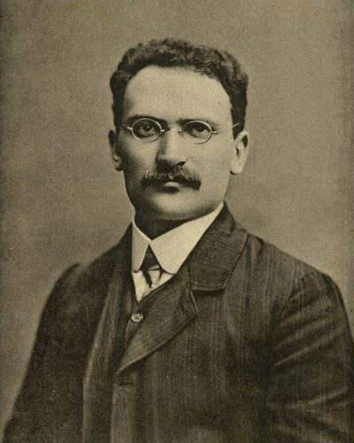

Ideologies / Left
What is Labour Zionism?
Labour Zionism is a political ideology in the Left family. Borochov set out to reconcile Marxism with Zionism. He argued that a nation without a territory of its own has an abnormal economy: Jews in the diaspora were shut out of farming and basic industry and crowded into marginal trades, so Jewish workers had no firm ground on which to wage a class struggle. Migration to Palestine would arise from economic pressure and would create a Jewish working class on its own land. That working class, not private investors or diplomats, would build the country and then carry it to socialism.
A Jewish homeland built by Jewish workers as the ground for socialism.
Defined from: Ber Borochov, The National Question and the Class Struggle (1905) and Our Platform (1906)
See how close you are to Labour Zionism Dare a friend to answer as one


Where Labour Zionism stands on 13 axes
Each axis runs from 0 to 100. A score of 50 is the middle. On a classic compass it sits in the Libertarian Left quadrant.
| Axis | Position | Score | In words |
|---|---|---|---|
| EconomyMarket to Planned | 75 | Strongly Planned | |
| OwnershipPrivate to Collective | 90 | Very strongly Collective | |
| RightsLiberty to Security | 40 | Leans Liberty | |
| GovernmentDemocracy to Autocracy | 20 | Strongly Democracy | |
| StructureDecentralised to Centralised | 50 | Balanced | |
| NationInternationalist to Nationalist | 80 | Strongly Nationalist | |
| ImmigrationMulticulturalist to Assimilationist | 60 | Leans Assimilationist | |
| ValuesProgressive to Traditional | 20 | Strongly Progressive | |
| TechnologyAccelerationist to Precautionary | 30 | Strongly Accelerationist | |
| EnvironmentIndustrialist to Environmentalist | 30 | Strongly Industrialist | |
| ReligionSecular to Religious | 5 | Very strongly Secular | |
| MilitaryPacifist to Militarist | 50 | Balanced | |
| TradeFree Trade to Protectionist | 70 | Strongly Protectionist |
Ideologies closest to Labour Zionism
- Lassalleanism83% alike
- Fabianism80% alike
- Fanonism79% alike
- Three Principles of the People78% alike
- Democratic Socialism77% alike
Its opposite on this map is Christian Reconstructionism (Theonomy), at 35%.
Parties near Labour Zionism
Poale Zion (Russia) was the first party or movement to carry it, placed here from Our Platform (1906).
- Poale ZionRussia. Our Platform (1906)90% alike
- Popular UnityChile. Programa básico de gobierno de la Unidad Popular (1969)83% alike
- Social Democratic Workers' Party of AustriaAustria. The Linz Programme (1926)82% alike
- 26th of July MovementCuba. History Will Absolve Me (1953)81% alike
Common questions
What is Labour Zionism?
Labour Zionism is a political ideology in the Left family. Borochov set out to reconcile Marxism with Zionism. He argued that a nation without a territory of its own has an abnormal economy: Jews in the diaspora were shut out of farming and basic industry and crowded into marginal trades, so Jewish workers had no firm ground on which to wage a class struggle. Migration to Palestine would arise from economic pressure and would create a Jewish working class on its own land. That working class, not private investors or diplomats, would build the country and then carry it to socialism.
What does Labour Zionism believe?
In one line: A Jewish homeland built by Jewish workers as the ground for socialism. Its strongest positions are Secular, Collective, Democracy. Borochov set out to reconcile Marxism with Zionism. He argued that a nation without a territory of its own has an abnormal economy: Jews in the diaspora were shut out of farming and basic industry and crowded into marginal trades, so Jewish workers had no firm ground on which to wage a class struggle. Migration to Palestine would arise from economic pressure and would create a Jewish working class on its own land. That working class, not private investors or diplomats, would build the country and then carry it to socialism.
Who founded Labour Zionism?
Labour Zionism is defined here from The National Question and the Class Struggle (1905) and Our Platform (1906) by Ber Borochov. The thinker most tied to it is Ber Borochov (1881 to 1917).
Is Labour Zionism left wing or right wing?
On a classic two axis compass Labour Zionism falls in the Libertarian Left quadrant, which means the economic left and the libertarian side. Left and right hide a lot, though, which is why EthosScales scores it on thirteen separate axes.
How is Labour Zionism different from Lassalleanism?
They are close, at a 83% match. The biggest gaps are on Structure, where Labour Zionism scores 50 and Lassalleanism scores 80, and Values, where Labour Zionism scores 20 and Lassalleanism scores 40. On each axis, 0 is one end and 100 is the other.
Think this is wrong? Suggest a correction. The scores are editorial estimates.